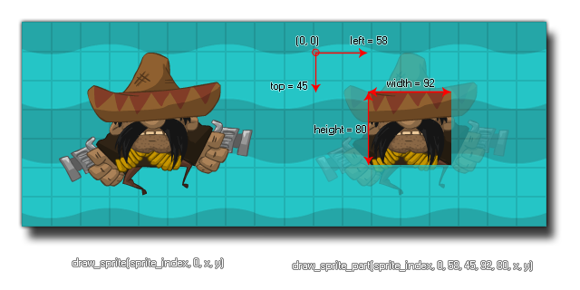

draw_sprite_part(sprite, subimg, left, top, width, height, x, y);
| Argument | Description |
|---|---|
| sprite | The index of the sprite to draw. |
| subimg | The subimg (frame) of the sprite to draw (image_index or -1 correlate to the current frame of animation in the object). |
| left | The x position on the sprite of the top left corner of the area to draw. |
| top | The y position on the sprite of the top left corner of the area to draw. |
| width | The width of the area to draw. |
| height | The height of the area to draw. |
| x | The x coordinate of where to draw the sprite. |
| y | The y coordinate of where to draw the sprite. |
Returns : N/A
With this function you can draw part of any sprite at a given position within the room. As with draw_sprite you can specify a sprite and a sub-image for
drawing, then you must give the relative coordinates within the sprite of the area to select for drawing. This means that a left position of 0 and a top position of 0 would be the top left corner of
the sprite and all further coordinates should be taken from that position. The image below shows an example of how this works:

NOTE : When drawing with this function, the sprite x offset and
y offset are ignored and the sprite part will be drawn with the top left corner at the specified x / y
position in the room.
draw_sprite_part(sprite_index, image_index, 4, 0, sprite_width-16, sprite_height-16, x, y );
This will draw the instances assigned sprite (sprite_index) and its current frame of animation (image_index), however it will shave a 4px margin off the width on both sides, and an 8 pixel margin off the height from the bottom of the original 24x24 pixel sprite.